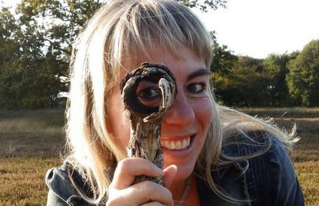

Irma Smegen is the founder of Speel je wijs, a company in the Netherlands that strives to improve education and a playful environment for children. She wrote four educational books, developed a game and organizes trainings for professionals working with children. She speaks at congresses about her teaching methods and the positive effects of it on learning.
Playing and playful learning are the main ingredients in Irma's work. Topics are mindfulness, STEAM (Science Technology, Engineering, Arts, Mathematic) and language education.
Next to this job, Irma teaches drama, arts and culture at Stenden University's ITEps (International Teacher Education for Primary Schools).
Most important in her life is being Irmama of Coen and Anna. Together with her husband Irma runs De Flintenhof, a business in minerals and crystals from all around the world in their beautiful village Orvelte.
Irma is known internationally for her work in promoting arts and mindfulness in education.